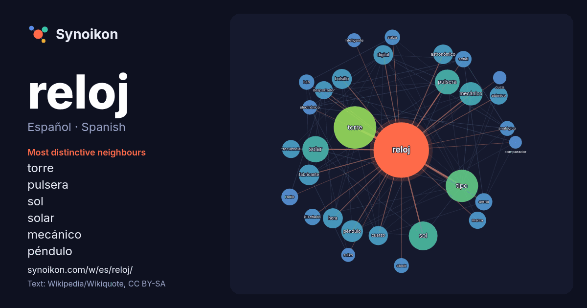

Español · Spanish · word of the day list
reloj
“clock” · The words found around it in 1311 instances from Spanish Wikipedia, Wikiquote.

Most distinctive neighbours
- torre 71×
- pulsera 43×
- sol 39×
- solar 38×
- mecánico 35×
- péndulo 33×
- bolsillo 27×
- tipo 27×
- fabricante 26×
- astronómico 26×
- cuarzo 26×
- despertador 23×
- atómico 22×
- hora 21×
- digital 20×
- arena 18×
- frecuencia 17×
- señal 16×
- clock 16×
- lujo 16×
× = how many times more often than in general Spanish Wikipedia text.
Most frequent neighbours
- torre 123
- tipo 71
- sol 56
- solar 47
- pulsera 42
- mecánico 37
- péndulo 32
- fabricante 29
- bolsillo 27
- hora 27
- astronómico 26
- digital 26
- cuarzo 25
- agua 23
- atómico 22
- despertador 22
- frecuencia 22
- conocido 21
- arena 20
- marca 20
In context
- arena Reloj de bolsillo Reloj de cuarzo Reloj de cucú o de cuco Reloj de diapasón Reloj de fuego Reloj de misa Reloj de péndulo Reloj de sol Reloj de trinchera Wikipedia snippets · Reloj
- El reloj de sol o reloj solar es un instrumento usado desde tiempos muy remotos con el fin de medir el tiempo. En castellano se le denomina también cuadrante Wikipedia snippets · Reloj de sol
- El reloj de cuco es un tipo de reloj provisto generalmente de péndulo y gong, que se caracteriza por tener una abertura por la cual, cada media hora, Wikipedia snippets · Reloj de cuco
- Se denomina reloj analógico al que indica la hora en una circunferencia numerada, mediante manecillas o agujas que indican la hora, los minutos y en algunos Wikipedia snippets · Reloj analógico
- El Reloj del Apocalipsis (en inglés Doomsday Clock, también llamado Reloj del Juicio Final) es un reloj simbólico, mantenido desde 1947 por la junta directiva Wikipedia snippets · Reloj del Apocalipsis
- Una señal de reloj (en inglés clock signal, o simplemente clock) es en la electrónica digital una señal binaria, que sirve para coordinar las acciones Wikipedia snippets · Señal de reloj
- Un reloj de pulsera es el que se lleva en la muñeca sujeto con una correa de piel, metal o de diversos materiales plásticos. Los relojes de pulsera son Wikipedia snippets · Reloj de pulsera
- Un reloj atómico es un tipo de reloj que, para alimentar su contador, utiliza una frecuencia de resonancia atómica normal. Los primeros relojes atómicos Wikipedia snippets · Reloj atómico
More Spanish words
- agua
- arte
- bosque
- caballo
- camino
- campana
- canción
- ciencia
- ciudad
- clima
- comida
- corazón
- desierto
- dinero
- dios
- espejo
- estrella
- familia
- fuerza
- gato
- historia
- invierno
- isla
- jardín
- lengua
- lluvia
- madre
- mapa
- miel
- montaña
- muerte
- naturaleza
- oro
- otoño
- pan
- perro
- puente
- sal
- salud
- silencio
- sombra
- tiempo
- tormenta
- trabajo
- tren
- té
- verano
- verdad
- vida
Precomputed on 2026-10-09 with default settings (±5 words, medium corpus). The interactive map can refresh it with live data.